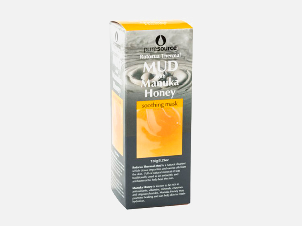

Mud bath and therapies have been popular for thousands of years. It is believed that mud has anti-inflammatory properties, so soaking in mud and its minerals can help to relieve aches and muscle pains. And, thanks to its exfoliating properties, it leaves you with smooth and soft skin.
*For the entire month of March you'll get 30% off the entire Rotorua Thermal Mud range. Just use coupon code 'MUDDING-MARCH' at the checkout. Also, be sure to check out our recent best sellers below.
A beautiful nourishing moisturiser especially developed for use straight after your Rotorua Thermal Mud Mask and Scrub. Blended with Manuka honey and rosehip oil to maintain that beautiful healthy glow you did get from your Mud treatment.

Mud Mask with Manuka Honey - 150g
RRP: $18.60
Combining the amazing benefits of Rotorua Thermal Mud and Manuka Honey. Rotorua Thermal Mud Mask, rich in minerals, is a great natural cleanser as it draws impurities and excess oils from your skin.